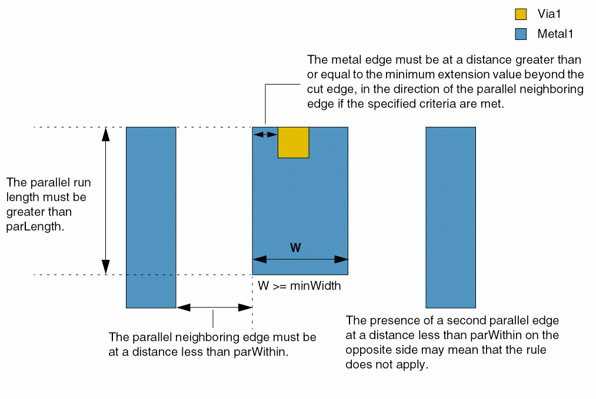
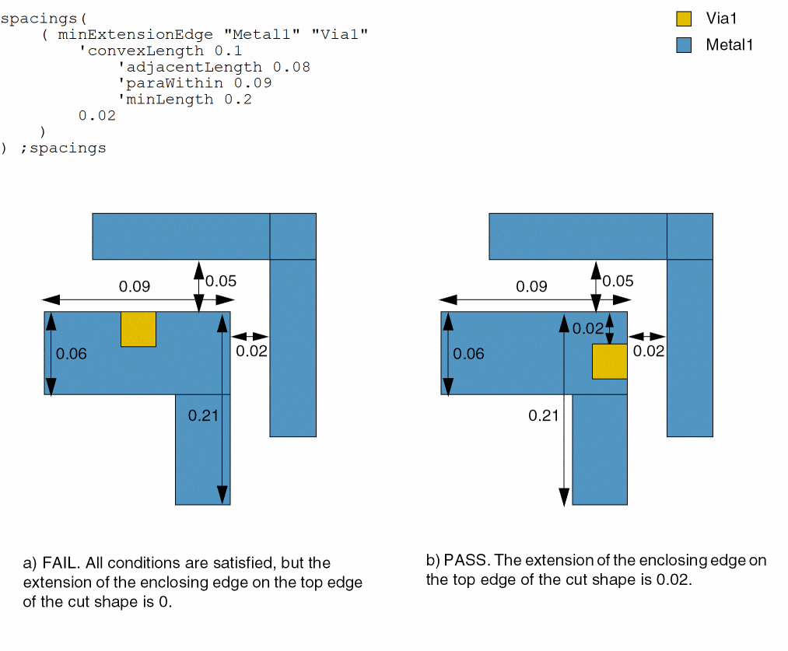
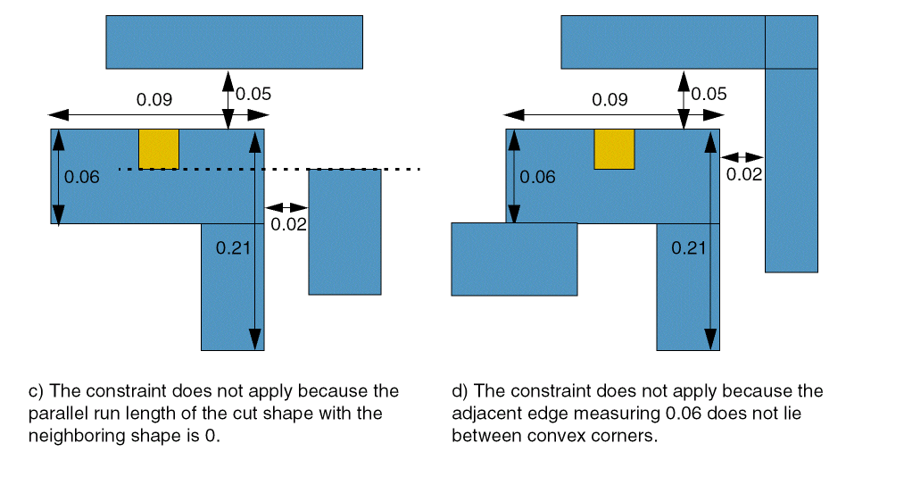

minExtensionEdge
spacings( ( minExtensionEdgetx_layer1tx_layer2['cutClass {f_width| (f_widthf_length) |t_name}] ['includeCorner] 'widthf_width['maxWidthf_maxWidth] 'paraLengthf_parLength['within {f_parWithin| (f_minWithinf_maxWithin)}] ['paraEdgeWidthf_parWidth] ['exceptExtraCut ['distanceWithinf_distance]] ['exceptTwoEdges ['exceptWithinf_exceptWithin]]f_extension)
( minExtensionEdge tx_layer1 tx_layer2
['cutClass {f_width | (f_width f_length) | t_name}]
['includeCorner]
'minSpanLength f_spanLength
['maxSpanLength f_maxSpanLength]
['paraLength f_parLength]
['within {f_parWithin | (f_minWithin f_maxWithin)}]
['paraEdgeWidth f_parWidth]
['exceptExtraCut ['distanceWithin f_distance]]
['exceptTwoEdges ['exceptWithin f_exceptWithin]]
f_extension
)
( minExtensionEdge tx_layer1 tx_layer2
['cutClass {f_width | (f_width f_length) | t_name}]
['includeCorner]
'convexLength f_convexLength
'adjacentLength f_adjLength
'minLength f_minLength
'paraWithin f_paraWithin
f_extension
)
( minExtensionEdge tx_layer1 tx_layer2
['cutClass {f_width | (f_width f_length) | t_name}]
'twoSides
['eolWidth f_eolWidth]
['exceptConcaveCorner f_exceptConcaveCorner]
['cutToMetalSpace f_cutToMetalSpace
['layer f_layer] ['edgeExtension f_edgeExtension]
]
['horizontal | 'vertical]
['insideLayers (tx_layer3 tx_layer4 … tx_layerN)
['insidePurposes (t_purpose1 t_purpose2 … t_purposeN)]
|
'outsideLayers (tx_layer3 tx_layer4 … tx_layerN)
['outsidePurposes (t_purpose1 t_purpose2 … t_purposeN)]
]
f_extension
)
) ;spacings
Specifies the minimum extension of a shape on one layer past a shape on another layer. Typically, layer1 is a metal layer and layer2 is a cut layer. The layer1 edge that must satisfy the constraint is determined by any parallel neighboring edges that are present.
The extension value specified with this constraint is typically larger than the value specified using minExtensionDistance or minOppExtension constraints and applies if the metal shape enclosing the cut shape has width greater than minWidth and is less than parWithin away from a neighboring shape whose parallel run length with the enclosing metal shape is greater than parLength, as shown in the figure below. Additionally, the cut shape must have a parallel run length greater than zero with the neighboring shape.
The constraint may not apply if:
- An extra cut shape exists in the same metal extension.
- The enclosing metal shape has two neighboring shapes, on opposite sides, less than parWithin away and with parallel run length greater than parLength.
-
The cut shape belongs to a class different from the one specified.

In some processes, the conditions illustrated in the figure below must be satisfied for the constraint to apply. The enclosing edge (EE) and an adjacent edge (AE1) must lie between two convex corners. Additionally, the cut must have parallel run length greater than 0 with neighboring shapes that are parallel to EE and the other adjacent edge (AE2).
Values
Parameters
|
The cut class to which the constraint applies, specified by width, by width and length, or by name (as defined in a cutClasses constraint). |
|
|
The width of the enclosing layer1 shape must be greater than or equal to this value. |
|
|
The width of the enclosing layer1 shape must be less than this value. |
|
|
The constraint applies if the distance between the enclosing layer1 edge and a parallel metal edge is less than parWithin, or if the distance between the two edges is greater than or equal to minWithin and less than maxWithin. |
|
|
The constraint applies only if the parallel run length between the enclosing layer1 shape and a neighboring edge is greater than this value (parLength). |
|
|
The constraint applies only if the width of the parallel neighboring shape is greater than or equal to this value. |
|
|
The constraint does not apply if there exists another layer2 shape in the same metal intersection. |
|
|
If there are two layer2 shapes in the same metal intersection, then they must be at a distance greater than this value for the constraint to apply. |
|
|
The constraint does not apply if neighboring edges with parallel run length greater than parLength exist on opposite sides of the enclosing metal shape at a distance less than parWithin from it. |
|
|
The constraint applies if the neighboring edges on opposite sides are at a distance less than this value. |
|
|
The constraint applies to the corner of the cut shape, using Euclidean measurement. This check is required if the cut shape is outside the projection of the neighboring shape. |
|
|
The constraint applies only if the span length of the metal shape in the direction perpendicular to the parallel run length is greater than or equal to this value. |
|
|
The constraint applies only if the span length of the metal shape in the direction perpendicular to the parallel run length is less than this value. |
|
|
(Virtuoso Advanced Node for Layout Standard) If an edge of a layer2 shape has a layer1 extension less than or equal to the constraint value, then the entire opposite edge of the layer2 shape must also have an extension less than or equal to the constraint value. |
|
|
The constraint applies only if the end-of-line width of the metal edges satisfying the |
|
|
(Virtuoso Advanced Node for Layout Standard) The distance of a concave corner from a cut edge orthogonal to the cut edges satisfying the |
|
|
The distance of a cut edge satisfying the |
|
|
(Virtuoso Advanced Node for Layout Only) The metal layer to which |
|
|
(Virtuoso Advanced Node for Layout Only) The cut to different-net spacing of a cut edge satisfying the |
|
|
The constraint applies only if the length of the enclosing edge (EE) is less than or equal to this value.
In addition, the |
|
|
The constraint applies only if the length of the adjacent edge (AE1) lying between two convex corners is less than or equal to this value. |
|
|
The constraint applies only if the length of the other adjacent edge (AE2) is greater than or equal to this value. |
|
|
The constraint applies if the distance of both the enclosing edge (EE) and the other adjacent edge (AE2) from its neighboring edge is less than this value. |
|
|
(Virtuoso Advanced Node for Layout Standard) The direction in which the extension is measured. |
|
|
|
|
|
(Virtuoso Advanced Node for Layout Standard) Determines if the constraint applies, based on the presence or absence of one or more layers.
For more information, see |
|
|
(Virtuoso Advanced Node for Layout Standard) The |
|
|
(Virtuoso Advanced Node for Layout Standard) The |
|
Examples
- Example 1: minExtensionEdge with width, paraLength, and within
- Example 2: minExtensionEdge with exceptTwoEdges
- Example 3: minExtensionEdge with paraEdgeWidth and includeCorner
- Example 4: minExtensionEdge with twoSides and eolWidth
- Example 5: minExtensionEdge with exceptConcaveCorner and cutToMetalSpace
- Example 6: minExtensionEdge with cutToMetalSpace, layer, and edgeExtension
- Example 7: minExtensionEdge with minSpanLength
- Example 8: minExtensionEdge with convexLength
Example 1: minExtensionEdge with width, paraLength, and within
The extension of a Metal1 shape with minimum width 0.2 past a Via1 cut must be at least 0.05 in the direction of a neighboring Metal1 edge less than 0.11 away, when the parallel run length for the Metal1 shapes is greater than 0.25.
Example 2: minExtensionEdge with exceptTwoEdges
The extension of a Metal1 shape with minimum width 0.2 past a Via1 cut must be at least 0.05 in the direction of a neighboring Metal1 edge greater than or equal to 0.08 and less than 0.1 away from it, when the parallel run length for the Metal1 shapes is greater than 0.5. The constraint does not apply if such neighboring shapes are present on both sides, except when their distance from the enclosing shape is less than 0.12.
Example 3: minExtensionEdge with paraEdgeWidth and includeCorner
The extension of a Metal1 shape with minimum width 0.2 past a Via1 cut must be at least 0.05, for edges as well as corners, in the direction of a neighboring Metal1 edge less than 0.1 away from it, when the parallel run length for the Metal1 shapes is greater than 0.5. The width of the neighboring shape must be at least 0.2.
Example 4: minExtensionEdge with twoSides and eolWidth
The extension of a Metal1 shape past a Via1 cut must be at least 0.02 along the entire length of a pair of opposite edges of the cut shape, and the end-of-line width of the metal edges that satisfy the 'twoSides requirement must be at least 0.15.
Example 5: minExtensionEdge with exceptConcaveCorner and cutToMetalSpace
The extension of a Metal1 shape past a Via1 cut must be at least 0.02 along the entire length of a pair of opposite edges of the cut shape. The following conditions must also be satisfied:
- The distance of a metal concave corner from a cut edge orthogonal to the cut edges satisfying the extension requirement must be greater than 0.05.
-
The distance of a cut edge, satisfying the extension requirement, from a different-net wire must be greater than or equal to 0.07.

Example 6: minExtensionEdge with cutToMetalSpace, layer, and edgeExtension
The extension of a Metal1 shape past a Via1 cut must be at least 0.02 along the entire length of a pair of opposite edges of the cut shape, and the distance of a cut edge, satisfying the extension requirement, from a different-net wire must be greater than or equal to 0.07. Additionally, this distance must be measured after projecting the metal edge by 0.03 along the direction of the cut.
Example 7: minExtensionEdge with minSpanLength
The extension of a Metal1 shape with minimum span length 0.2 past a Via1 cut must be at least 0.02 in the direction of a neighboring Metal1 edge less than 0.09 away, when the parallel run length for the Metal1 shapes is greater than 0.01.
Example 8: minExtensionEdge with convexLength
The extension of a Metal1 edge—enclosing edge (EE)—past a Via1 cut must be at least 0.02 if the following conditions are true:
- EE is less than or equal to 0.1 and lies between two convex corners.
- EE has two adjacent edges, one of which (AE1) also lies between two convex corners and is less than or equal to 0.08. The other adjacent edge (AE2) is greater than or equal to 0.2.
-
The distance of EE and AE2 from a neighboring edge is less than 0.09.

Return to top